|
GeometrizeTwitterBot
1.0
Python Twitter bot for geometrizing images into geometric primitives
|
|
GeometrizeTwitterBot
1.0
Python Twitter bot for geometrizing images into geometric primitives
|
This module contains code that reads tweet text and figures out how the bot should do in response. More...
Functions | |
| def | _represents_int |
| Returns true if the given string represents an integer value. More... | |
| def | _clamp |
| Clamps the given number within the range smallest, largest. More... | |
| def | _add_shape_type_for_keywords |
| Adds the given items to the given dictionary, mapping each keyword to the given shape name. More... | |
| def | _make_shape_keyword_dictionary |
| Creates a dictionary mapping shape keywords to canonical shape names used by ChaiScript scripts Provides a convenient way to map words in tweets like "rects" to the shape type "RECTANGLE". More... | |
| def | _max_quantity_for_shape_type |
| Gets the maximum number of shapes allowed for the given shape type This to to set a sensible limit on the length of time the bot will spend on a single image. More... | |
| def | _plural_name_for_shape_type |
| Gets a human-readable name for the given shape type. More... | |
| def | _make_loop_body |
| Helper for constructing a ChaiScript script for geometrizing shapes. More... | |
| def | _make_for_loop |
| Helper for constructing a ChaiScript script for geometrizing shapes. More... | |
| def | _make_shape_code |
| Helper for constructing a ChaiScript script for geometrizing shapes. More... | |
| def | make_shape_quantity_dictionary |
| Parses a tweet message and returns a dictionary of the shape types and quantities that were requested. More... | |
| def | make_code_for_shape_tweet |
| Parses the given tweet, returning the ChaiScript code for Geometrize to run based on the contents of the tweet. More... | |
| def | make_message_for_shape_dictionary |
| Creates a message for the given shape dictionary, suitable for tweeting along with the result of running the script. More... | |
Variables | |
| list | _rect_keywords = [ "rect", "rects", "rectangle", "rectangles" ] |
| list | _rotated_rect_keywords = [ "rotated_rect", "rotated_rects", "rotated_rectangle", "rotated_rectangles" ] |
| list | _triangle_keywords = [ "tri", "tris", "triangle", "triangles" ] |
| list | _ellipse_keywords = [ "ellipse", "ellipses" ] |
| list | _rotated_ellipse_keywords = [ "rotated_ellipse", "rotated_ellipses" ] |
| list | _circle_keywords = [ "circ", "circs", "circle", "circles" ] |
| list | _line_keywords = [ "line", "lines" ] |
| list | _quadratic_bezier_keywords = [ "bezier", "beziers", "quadratic_bezier", "quadratic_beziers" ] |
| list | _polyline_keywords = [ "polyline", "polylines" ] |
This module contains code that reads tweet text and figures out how the bot should do in response.
|
private |
Adds the given items to the given dictionary, mapping each keyword to the given shape name.
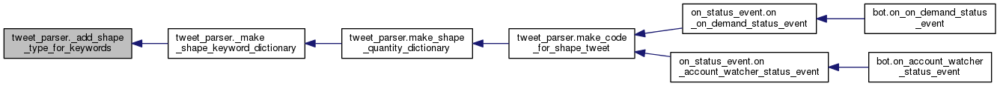
|
private |
Clamps the given number within the range smallest, largest.
|
private |
Helper for constructing a ChaiScript script for geometrizing shapes.
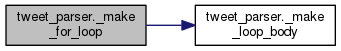
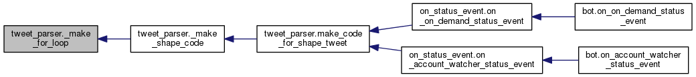
|
private |
Helper for constructing a ChaiScript script for geometrizing shapes.
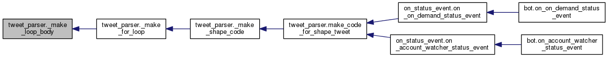
|
private |
Helper for constructing a ChaiScript script for geometrizing shapes.
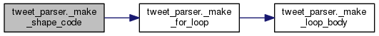
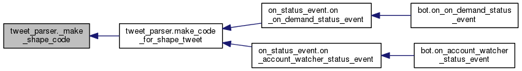
|
private |
Creates a dictionary mapping shape keywords to canonical shape names used by ChaiScript scripts Provides a convenient way to map words in tweets like "rects" to the shape type "RECTANGLE".
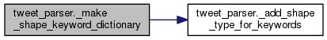
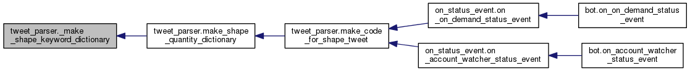
|
private |
Gets the maximum number of shapes allowed for the given shape type This to to set a sensible limit on the length of time the bot will spend on a single image.
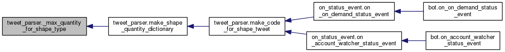
|
private |
Gets a human-readable name for the given shape type.
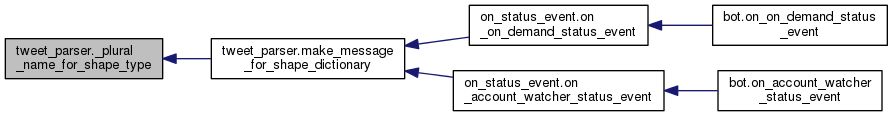
|
private |
Returns true if the given string represents an integer value.
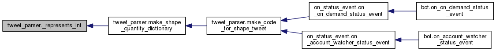
| def tweet_parser.make_code_for_shape_tweet | ( | message | ) |
Parses the given tweet, returning the ChaiScript code for Geometrize to run based on the contents of the tweet.
The shapes are added in the order they are specified in the message. Message examples: "@Geometrizer triangles=30 and rectangles=20, thanks bot!" - produces an image with 30 triangles, then 20 rectangles. Or: "@Geometrizer triangles=30 circles=500, triangles=20, nice bot!" - produces an image with 30 triangles, 500 circles, 20 triangles. Or: "@Geometrizer tris=300 circs=200" - produces an image with 300 triangles, 200 circles. Or: "@Geometrize rotated_rects=500" - produces an image with 500 rotated rectangles. Or: "@Geometrizer this is a really cool bot!" - produces an image with a random selection and quantity of shapes. :return A chunk of ChaiScript code that adds the shapes that the tweet requests (must be combined with a larger script to work).
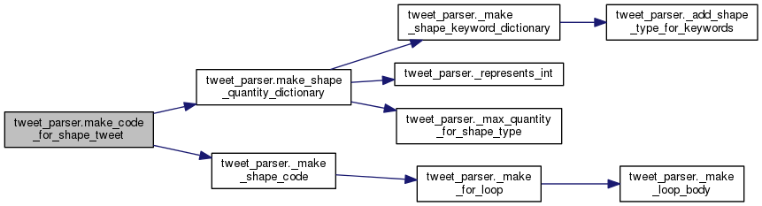
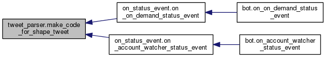
| def tweet_parser.make_message_for_shape_dictionary | ( | shape_quantity_dictionary | ) |
Creates a message for the given shape dictionary, suitable for tweeting along with the result of running the script.
For example [ "ROTATED_RECTANGLES" => 250 ], "250 Rotated Rectangles" :return A message describing the shapes and quantities.
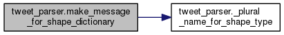
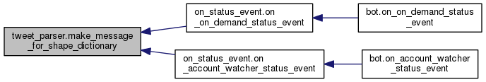
| def tweet_parser.make_shape_quantity_dictionary | ( | message | ) |
Parses a tweet message and returns a dictionary of the shape types and quantities that were requested.
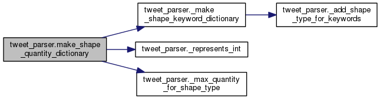
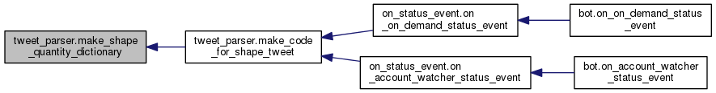
| list tweet_parser._circle_keywords = [ "circ", "circs", "circle", "circles" ] |
| list tweet_parser._ellipse_keywords = [ "ellipse", "ellipses" ] |
| list tweet_parser._line_keywords = [ "line", "lines" ] |
| list tweet_parser._polyline_keywords = [ "polyline", "polylines" ] |
| list tweet_parser._quadratic_bezier_keywords = [ "bezier", "beziers", "quadratic_bezier", "quadratic_beziers" ] |
| list tweet_parser._rect_keywords = [ "rect", "rects", "rectangle", "rectangles" ] |
| list tweet_parser._rotated_ellipse_keywords = [ "rotated_ellipse", "rotated_ellipses" ] |
| list tweet_parser._rotated_rect_keywords = [ "rotated_rect", "rotated_rects", "rotated_rectangle", "rotated_rectangles" ] |
| list tweet_parser._triangle_keywords = [ "tri", "tris", "triangle", "triangles" ] |
 1.8.6
1.8.6